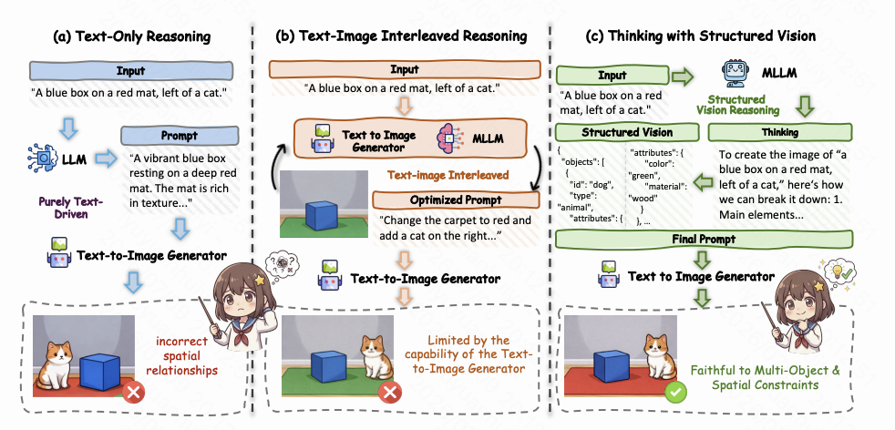
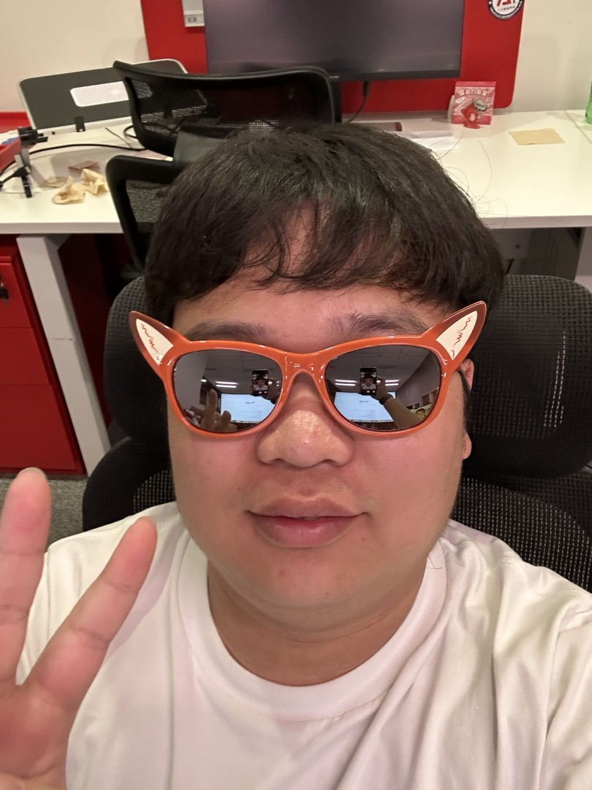
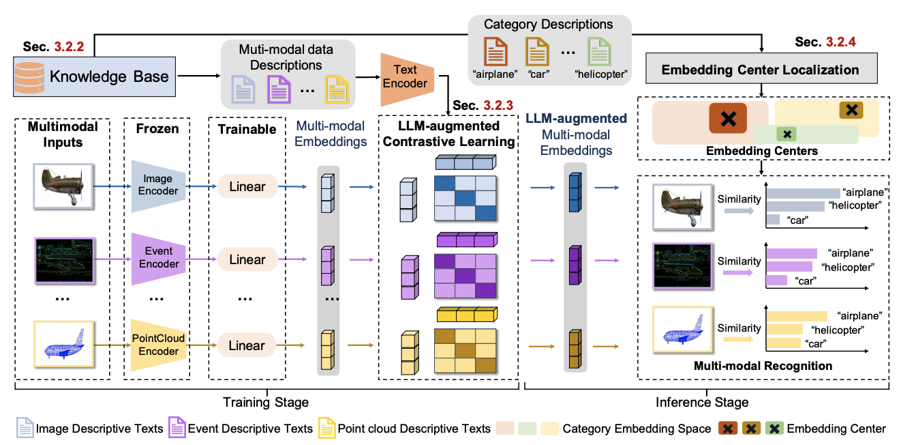
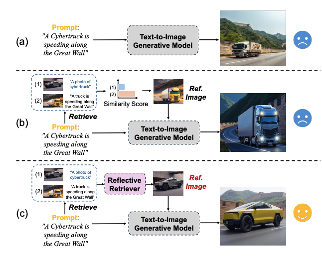
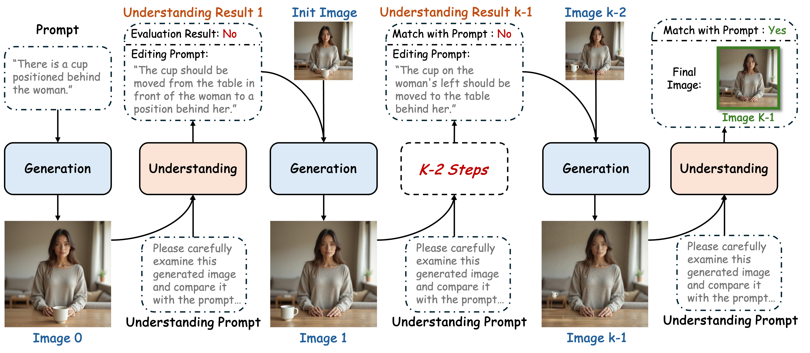
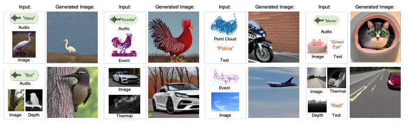

arXiv 2026
Hi! I'm Yuanhuiyi Lyu (吕原汇一), a Ph.D. student in Artificial Intelligence at The Hong Kong University of Science and Technology (Guangzhou). I am fortunate to be advised by Prof. Xuming Hu, Prof. Linfeng Zhang @ SJTU, and Prof. Ying-Cong Chen. I am currently a research intern at Kling AI, Kuaishou, where I work on multimodal generation.
Currently, I focus on:
>>> I am currently on the job market and open to research or engineering opportunities in multimodal AI. Please feel free to contact me by email.
Please refer to my Google Scholar for a full paper list.

arXiv 2026
CVPR 2024
ICML 2025
arXiv 2025
arXiv 2024